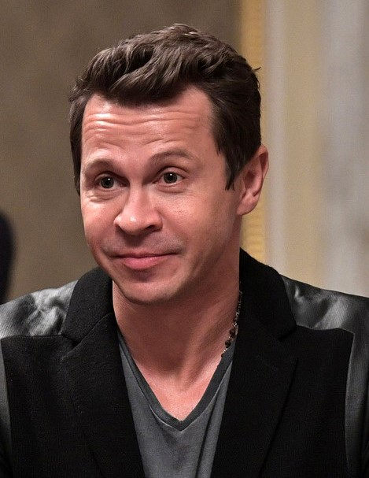
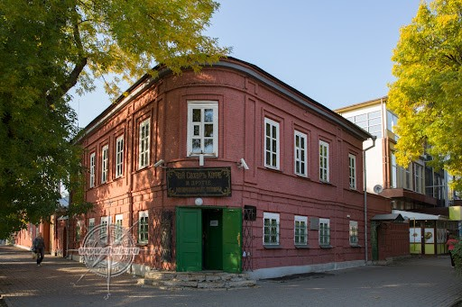

История
В 1696 году после того, как был взят Азов, Петр1 распорядился начать строительство гавани и крепости на Таганьем Роге. Дату 12 сентября 1698 года было принято считать моментом основания города Таганрога, который первоначально назывался Троик на Таган-Роге. Крепость окружал земляной вал высотой 8 м, ров глубиной 5 м, общая протяженность крепости составляла 3 км. В августе 1696 года Приазовье становится крупнейшим в России местом ссылки «на вечное житье». Там же появилась первая в России каторга, центром которой стал Таганрог. В итоге, только после победоносной войны 1768 — 1744 г. крепость стала частью России окончательно. В связи с основанием в 1783 году города Севастополя Таганрог потерял свое военно-стратегическое значение и стал крупнейшим портом России. В связи с основанием в 1783 году города Севастополя Таганрог потерял свое военно-стратегическое значение и стал крупнейшим портом России.
Выдающиеся личности города
Федор Добронравов
Советский и российский актёр театра, кино, озвучивания и дубляжа, продюсер, певец. Народный артист России (2011), актер театра и кино

Павел Деревянко
Российский актёр театра и кино. Почётный деятель искусств г. Москвы Зиновий Высоковский советский и российский актёр театра и кино, эстрадный артист. Народный артист Российской Федерации (2003), заслуженный артист РСФСР (1978), заслуженный деятель культуры Польши.
Учился в Киеве, Украинская ССР. Затем Павел переехал в Москву, где поступил в Российскую академию театрального искусства. Учился там с 1996 по 2000 год.
Фаина Раневская
Российская и советская актриса театра и кино; лауреат трёх Сталинских премий (1949, 1951, 1951), народная артистка СССР (1961)[2]. Кавалер ордена Ленина (1976 Николай Добрынин советский и российский актёр театра, кино и дубляжа, заслуженный артист России.
Рома Зверь
Музыкант, поэт, телеведущий, лидер рок-группы «Звери». Родился 7 декабря 1977 года в Таганроге. В школе увлёкся гитарой, стал писать песни, исполнять их вместе с друзьями. Создал группу «Асимметрия»[1]. Окончил строительное ПТУ № 23 в Таганроге[2], а потом Донской межрегиональный колледж строительства и экономики.
Виктор Добронравов
Российский актёр театра, кино и дубляжа, музыкант, лидер группы «Ковер-Квартет». Заслуженный артист Российской Федерации (2018). Сын актёра Фёдора Добронравова.
Игорь Крикунов
Советский и украинский актер театра и кино, режиссер, музыкант, певец, композитор, педагог, театральный и общественный деятель. Народный артист Украины
Михаил Танич
Советский и российский поэт и поэт-песенник, народный артист Российской Федерации.
Традиции города
Культурный календарь Таганрога богат интересными мероприятиями, некоторые из которых известны далеко за пределами страны. Главным культурным событием в жизни города без сомнений может быть назван Чеховский книжный фестиваль, который ежегодно проводят в середине мая. Самым известным событием города считается посвящённый великому сражению фестиваль исторической реконструкции «Оборона Таганрога 1855 года». День рождения Таганрога приходится на середину сентября. В это время у гостей города и его местных жителей есть возможность насладиться музыкальными, танцевальными и театрализованными представлениями, с массовыми народными гуляниями, спортивными и интерактивными конкурсами, дегустациями блюд местной кухни.
Достопримечательности города
Таганрог сегодня - это город-музей под открытым небом. В здании, где ранее располагалась классическая мужская гимназия - одно из старейших учебных заведений царской России, сейчас находится Таганрогский литературный музей А.П.Чехова. Благодаря многолетней собирательской работе фондовые коллекции, у истоков которых стоял сам А.П. Чехов, обогатились подлинными письменными и вещественными памятниками и составляют сегодня более 280 тысяч единиц хранения. В состав музея-заповедника входят семь музеев и около 30 объектов музейного показа, связанных с историей города, жизнью и творчеством А.П. Чехова.
Театр, носящий имя всемирно известного писателя А. П. Чехова, - старейший на юге России. Начиная с 1827года, труппа русских драматических артистов, под управлением "неслужащего дворянина Петровского", положила начало постоянному Таганрогскому театру. Труппа Петровского почти в неизменном составе просуществовала около 20 лет. Сегодня театр творит, бережно сохраняя и продолжая традиции русского реалистического искусства. Таганрогский ордена «Знак Почета» театр им. А.П. Чехова не на словах, а на деле доказал, что он достоин имени своего великого земляка. Художественный руководитель театра – заслуженный деятель искусств РФ, заслуженный артист России Сергей Давыдович Герт.
В картинной галерее собрана лучшая на юге России коллекция русской живописи. Идея создания в Таганроге городского музея принадлежала А. П. Чехову. По просьбе Чехова И. Е. Репин обратился в Совет Академии художеств с ходатайством о передаче таганрогскому городскому музею картин русских живописцев. Сегодня в фондах музея хранится более семи тысяч экспонатов иконописи, живописи, графики, скульптуры, декоративно-прикладного искусства. Наиболее ценной частью этого собрания являются картины русских художников XVIII—XX веков. Первоклассные полотна старых русских мастеров А. Антропова, Ф. Рокотова, Г. Семирадского, И. Айвазовского, В. Тропинина, И. Шишкина, А. Саврасова, И. Репина, В. Сурикова, В. Верещагина, К. Маковского, И. Левитана, К. Коровина, Н. Богданова-Бельского и многих других великих художников позволяют представить отечественное искусство на разных этапах его развития
Центральная городская публичная библиотека им. А. П. Чехова. Здание, в котором находится библиотека сегодня, построено по просьбе А.П. Чехова по проекту его друга, московского архитектора академика Ф.О. Шехтеля. Центральная городская публичная библиотека имени А. П. Чехова обладает уникальными фондами, которые являются ценнейшим историческим источником и информационным ресурсом Донского края.
Cтарейшая набережная Таганрога – Пушкинская, появилась в городском плане еще в 1808 году. Ее прежние названия – Восточная, Воронцовская. К концу 19 столетия, когда местный торговый порт начал терять свою значимость, территория стала использоваться жителями для прогулок – с тех пор прибрежный променад и стал одной из главных локаций для отдыха.

Новая набережная (Чеховская) в Таганроге появилась в 2010 году: ее благоустройством занимался местный металлургический завод, один крупнейших в стране. Ранее променад не мог похвастать живописным пейзажем – берег моря обрамляли укрепительные и противооползневые сооружения, однако теперь он заслуживает звание одного из самых красивых в городе. Название зоны отдыха – Чеховская набережная Азовского моря. О знаменитом писателе напоминает оригинальный бронзовый памятник
Музей «Домик Чехова» в Таганроге. Совсем небольшой, аккуратный и скромный домик, находящийся в глубине одного из дворов замечательного города Таганрог, может показаться на первый взгляд ничем не примечательным. Но, как и ко многим вещам в нашем мире, которые поначалу кажутся незначительными.

Музей «Лавка Чеховых» в Таганроге. Прекрасный и гостеприимный южный город Таганрог полон интересных мест и достопримечательностей. Но все же для многих путешественников он традиционно ассоциируется с именем великого русского писателя Антона Павловича Чехова. Ведь именно здесь он родился, провел детство и отрочество.